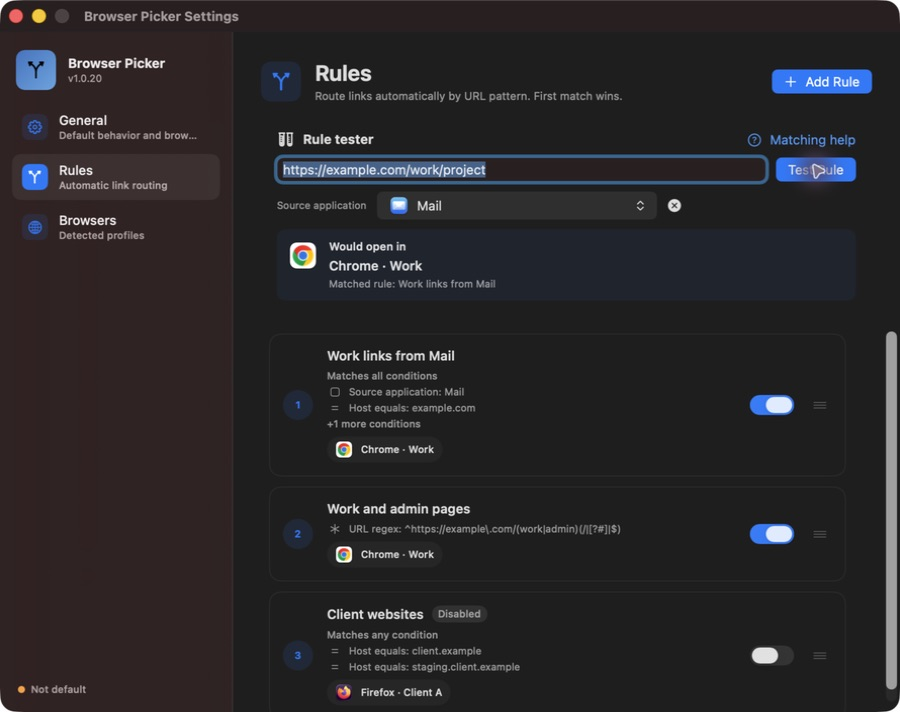
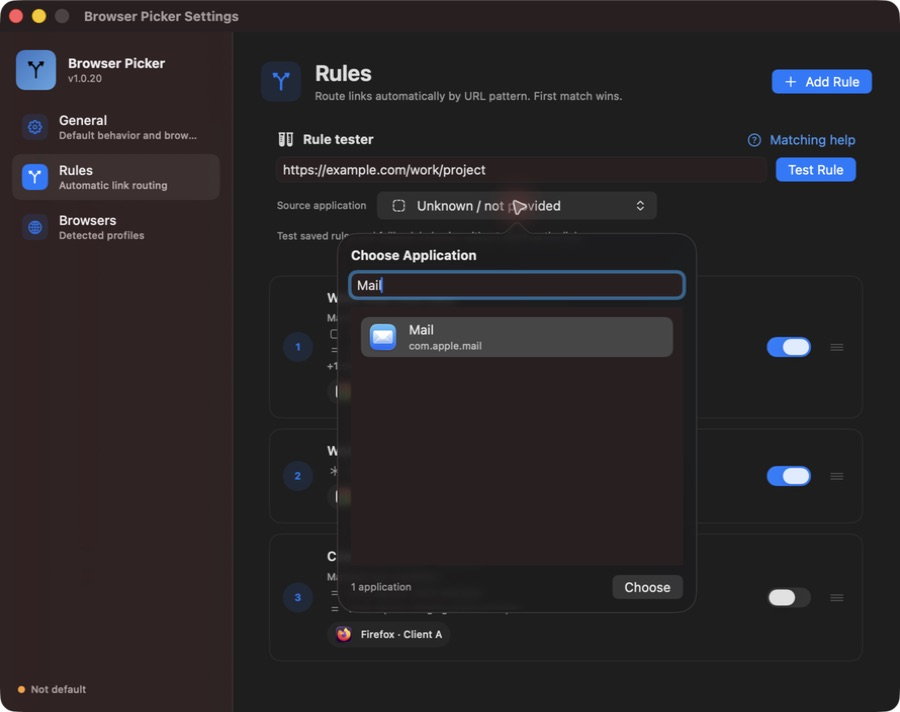
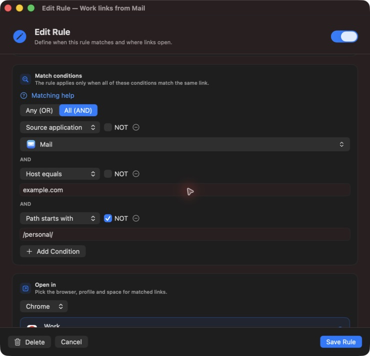
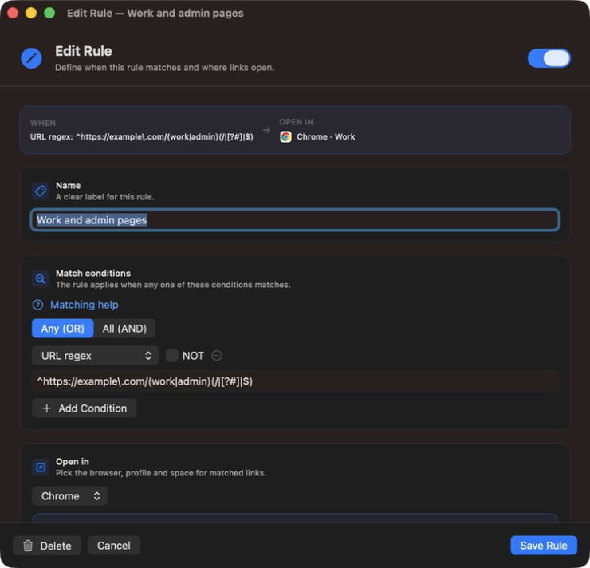
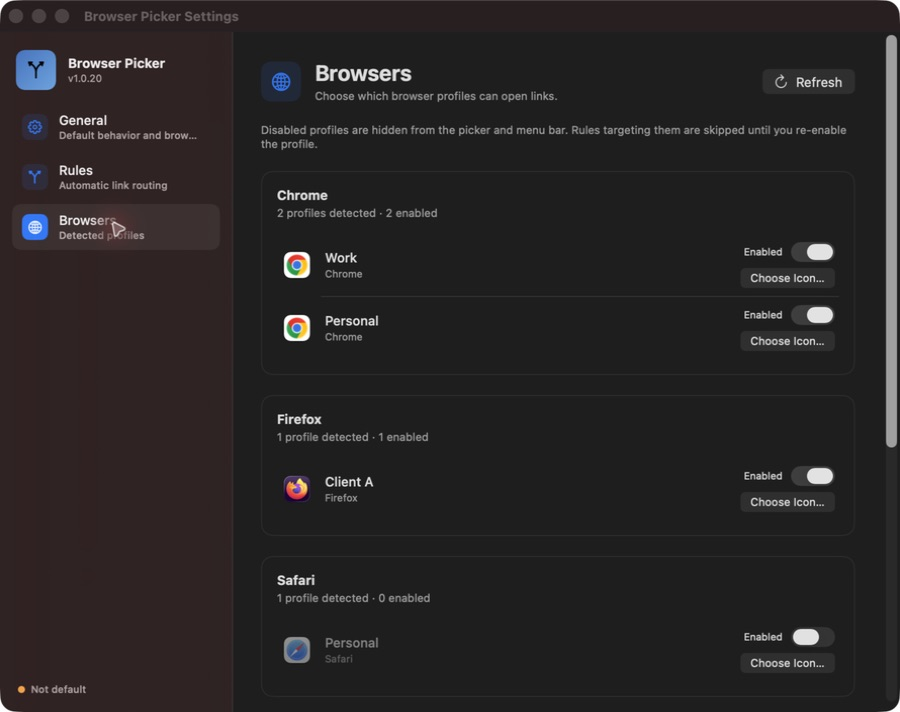
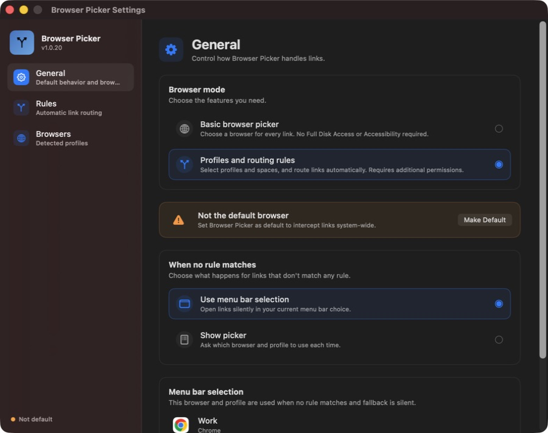

Your browser, profile, and space
Open links in Chrome → Work, Firefox → Client A, or a specific Zen space. Supports Chrome, Edge, Brave, Vivaldi, Dia, Firefox, Zen, and Safari.
Free & open source for macOS
Send work links to your work profile and personal links to your own browser. Match the URL and the app it came from, or use a simple picker to choose a browser every time.
brew install --cask mertizci/tap/browser-picker
Just need a browser picker? Basic mode works without extra permissions.

A personal Chrome. A work Chrome profile. Firefox for a client. Safari for everything else. Every link you click is a small gamble — and when it loses, you're signed into the wrong account, copying the URL, and pasting it somewhere else.
Browser Picker removes the gamble. It sits in your menu bar as the system default browser, looks at each incoming link, and opens it exactly where it belongs.
Open links in Chrome → Work, Firefox → Client A, or a specific Zen space. Supports Chrome, Edge, Brave, Vivaldi, Dia, Firefox, Zen, and Safari.
Send links from Mail, Slack, or another app to the right profile. Search installed applications by name, with native icons and keyboard selection.
Build one rule with Any (OR) or All (AND), plus NOT for exceptions. Match hosts, URLs, paths, regex patterns, and source applications.
Enter a URL and an optional source application. The Rule tester shows the matching saved rule, browser, profile, and Zen space without launching a browser.
Choose Basic mode for one entry per browser and a choice on every link. No Full Disk Access or Accessibility required. Your profile settings stay saved.
Give your work profile a company logo and your personal profile its own image. Custom icons appear in the picker, menu bar selection, settings, and rules.
Disable unused profiles in Settings. They disappear from browser choices, and rules targeting them are skipped until you enable them again.
Duplicate a rule from its context menu, toggle it directly in the list, and drag to set priority. Resize the editor once; new and existing rules remember that size.
A native SwiftUI menu bar app for Apple Silicon and Intel. The Dock icon appears while app windows are open and disappears when the last one closes.
Search applications, combine conditions, and check the destination before a link opens. Screenshots use example rules and profiles. Select an image to view it at full size.





Start with a domain. Add an app or a path when you need more control.
Work links from Mail
example.com/personal/Open in Chrome · Work
Two client websites, one rule
client.examplestaging.client.exampleOpen in Firefox · Client A
| Condition | What it checks | Example |
|---|---|---|
| URL contains | Text in the full URL; ignores case. | project=work |
| Host equals | The exact hostname; ignores case. | example.com |
| Host suffix | A literal hostname ending; ignores case. | example.com |
| Path equals | The full decoded path; case-sensitive. | /work/dashboard |
| Path starts with | A decoded path prefix; case-sensitive. | /work/ |
| Path contains | Text in the decoded path; case-sensitive. | /reports/ |
| URL regex | A pattern in the full URL; case-sensitive by default. | ^https://example\.com/ |
| Source application | The sending application. |
Path conditions exclude query strings and fragments. Host suffix is literal: example.com also matches notexample.com. Use Host equals for an exact domain or a bounded regex for subdomains.
Choose URL regex and paste this pattern without surrounding slash delimiters:
^https://example\.com/(work|admin)(/|[?#]|$)Matches https://example.com/work/project and https://example.com/admin, while excluding /workshop. Prefix a regex with (?i) to ignore case. Invalid patterns are highlighted in the editor.
Rules run in priority order; the first enabled match with an available, enabled profile wins. Use the tester with a saved rule to check the result. Matching help in the app opens an offline guide, or read the rule guide on GitHub.
Your choice
Choose Continue Without Permissions during setup. Basic mode asks which browser to use for each link, with one entry per installed supported browser.
No Full Disk Access or Accessibility is required. Browser Picker uses normal macOS URL opening, and your browser chooses its current or default profile.
Switch modes anytime in Settings → General → Browser mode. Your profile settings and rules stay saved while profile selection, spaces, and automatic routing are paused.
The icon appears in your menu bar. Choose Basic mode without extra permissions, or set up permissions for profiles and routing rules.
One click from the menu bar, or pick Browser Picker under System Settings → Desktop & Dock.
In profile mode, open Settings → Rules, choose your conditions and destination, then check them with Rule tester. In Basic mode, simply open a link and pick a browser.
Free and open source. Every release is signed and notarized by Apple, so it opens without warnings.
Grab the latest disk image, open it, and drag Browser Picker into your Applications folder.
Download latest releaseUniversal build · macOS 14.0 or later
Already a Homebrew user? Install and update it with a single command.
brew install --cask mertizci/tap/browser-picker
Updates arrive with brew upgrade.
Yes. Browser Picker ships as a universal binary, so it runs natively on both Apple Silicon and Intel Macs. It requires macOS 14.0 (Sonoma) or later.
Safari, Google Chrome, Microsoft Edge, Brave, Vivaldi, Dia, Firefox, and Zen — including their profiles. Zen also supports routing to named spaces. Basic mode shows one entry per installed supported browser.
Accessibility is used to control Safari and Dia profile menus and switch Zen spaces. Full Disk Access is used to read Safari profile names from its protected database. You can skip these permissions entirely by choosing Basic browser picker mode. After granting Accessibility, quit and reopen the app.
Link matching and rule testing happen locally on your Mac. There is no account or analytics, and URLs are not sent to a routing service. Update checks and installer downloads contact GitHub. Your rules, profile preferences, and custom icons are stored locally.
Browser Picker uses the sender reported by macOS when a link opens. Some links identify a helper app or provide no source. An unknown sender does not match a Source application condition, even with NOT. URL-only rules and fallback still apply.
Yes. In Settings → Browsers, turn off Enabled to hide a profile and skip rules targeting it. Choose Icon lets you select your own image or company logo. Both choices survive refreshes and restarts.
Official releases preserve the signing identity used by v1.0.20, and new releases validate that identity before distribution. Normal release updates should retain permissions. A grant tied to an older locally re-signed or test build may need a one-time repair: quit the app, remove its old permission entry, add the installed official app again, and reopen it. Debug builds now use a separate identity.
The Dock icon appears while an application window is open, including a minimized window. Closing the last window removes it while Browser Picker continues running in the menu bar. Opening the menu bar popover alone does not add a Dock icon.
Yes. Browser Picker is open source under the MIT License. All features are free; donations are optional.
Set up your routing rules, or start with a simple browser picker.